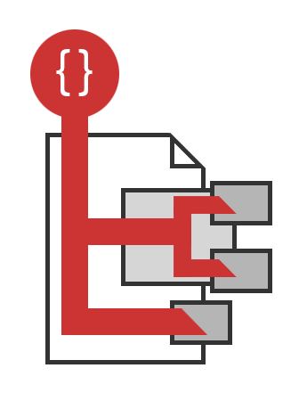
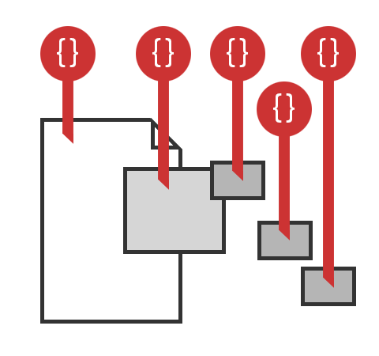

An introduction
By Matt Brailsford / @mattbrailsford
An introduction
By Matt Brailsford / @mattbrailsford
Same same but different
By Lee Kelleher / @leekelleher

About Me
- My name is
Matt BrailsfordLee Kelleher - I work at
The OutfieldUmbrella - I am Umbraco Level 1 & 2 Certified
- I am a
2 time5 time Umbraco MVP - I've released several packages
- Not Available for hire
#codecabin16
20 developers, 3 nights, 1 cabin
Sept 2nd - 5th 2016
What is Ditto?
Ditto is...
...an IPublishedContent model mapper for Umbraco
Why use Ditto?
Because...
- Strongly types your models/views
- Separates logic from views
- Encapsulates logic in reusable blocks
- A more granular/flexible approach
How is this different from Models Builder?
Models Builder = Domain Models
Ditto = View Models
The Model Builders Way

The Ditto Way

Creating Strongly Typed Models
With Ditto *
* based on the upcoming v0.9 release
Simple Model
MyModel.cs
public class MyModel {
public string Name { get; set; }
public string Url { get; set; }
}
var myModel = Model.Content.As<MyModel>();
Attributed Model
MyModel.cs
[UmbracoProperties(Recursive = true)]
public class MyModel {
[UmbracoProperty("heading", "pageName")]
public string Name { get; set; }
public string Url { get; set; }
[DittoIgnore]
public string Ignore { get; set; }
}
var myModel = Model.Content.As<MyModel>();
Custom Attributes
HelloAttribute.cs
public class HelloAttribute : DittoProcessorAttribute {
public string Name { get; set; }
public override object ProcessValue() {
return "Hello " + Name; // Could be any type, from anywhere
}
}
public class MyModel {
[Hello(Name = "Matt")]
public string MyString { get; set; }
}
var myModel = Model.Content.As<MyModel>();
Attribute Contexts
PagedContext.cs
public class PagedContext : DittoProcessorContext {
public int Page { get; set; }
public int PageSize { get; set; }
}
NewsAttribute.cs
[DittoProcessorMetaData(ValueType = typeof(object),
ContextType = typeof(PagedContext))]
public class NewsAttribute : DittoProcessorAttribute {
public override object ProcessValue() {
var ctx = Context as PagedContext;
return NewsService.GetLatestNews(ctx.Page, ctx.PageSize);
}
}
MyModel.cs
public class MyModel {
[News]
public IEnumerable<NewsItem> LatestNews { get; set; }
}
var ctx = new PagedContext { Page = 1, PageSize = 10 };
var myModel = Model.Content.As<MyModel>(processorContexts:new []{ ctx });
Chained Attributes
MyModel.cs
public class MyModel {
[UmbracoProperty("heading", "pageName", Order = 0)]
[Uppercase(Order = 1)]
public string Name { get; set; }
}
var myModel = Model.Content.As<MyModel>();
Caching
MyModel.cs
public class MyModel {
[DittoCache(CacheDuration = 300)]
[MyComplexData]
public IEnumerable<MyComplexData> Data { get; set; }
}
var myModel = Model.Content.As<MyModel>();
foreach(var item in myModel.Data){
...
}
Creating Strongly Typed Views
With Ditto *
* based on the upcoming v0.10 release
Simple View
MyModel.cs
public class MyModel {
public string Name { get; set; }
public string Url { get; set; }
}
@inherits DittoView<MyModel>
@Model.View.Name
Contextual View
NewsPageController.cs
public class NewsPageController : DittoController {
public override ActionResult Index(RenderModel model)
{
// Construct search context
var ctx = new PagedContext
{
Page = int.Parse("0" + Request.QueryString["p"]),
PageSize = int.Parse("0" + Request.QueryString["ps"])
};
// Register the context
RegisterProcessorContext(ctx);
// Continue to the page
return CurrentView(model);
}
}
@inherits DittoView<MyModel>
@foreach(var newsItem in Model.View.LatestNews){
...
}
Useful Links
Questions?
The End
By Matt Brailsford / @mattbrailsford
By Lee Kelleher / @leekelleher